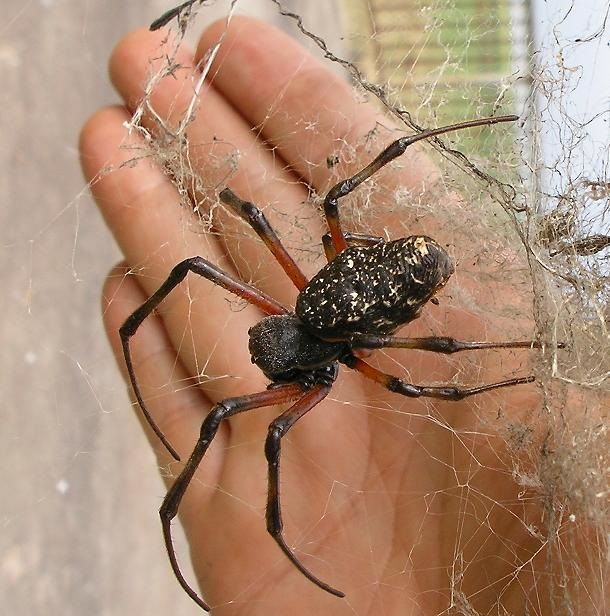

<!DOCTYPE html>
<html lang="pt-br">
<head>

    <meta charset="UTF-8">
    <meta http-equiv="X-UA-Compatible" content="IE=edge">
    <meta name="viewport" content="width=device-width, initial-scale=1.0">
    <link rel="stylesheet" href="/styles/style.css">
    <link rel="stylesheet" href="styles/scrollbar.css">
    
    <link href="https://cdn.jsdelivr.net/npm/bootstrap@5.3.0/dist/css/bootstrap.min.css" rel="stylesheet" integrity="sha384-9ndCyUaIbzAi2FUVXJi0CjmCapSmO7SnpJef0486qhLnuZ2cdeRhO02iuK6FUUVM" crossorigin="anonymous">
    <link rel="icon" type="image/png" href="src/assets/img/logo.png">
    <title>Avistei - N. cruentata</title>
</head>

<body style="background-image: url('src/assets/img/topside.png'); background-repeat: no-repeat; background-size: cover; background-attachment: fixed; position: relative;">
    <div id="app"></div>
    <script src="https://cdn.jsdelivr.net/npm/bootstrap@5.3.0/dist/js/bootstrap.bundle.min.js" integrity="sha384-geWF76RCwLtnZ8qwWowPQNguL3RmwHVBC9FhGdlKrxdiJJigb/j/68SIy3Te4Bkz" crossorigin="anonymous"></script>
    <script src="https://cdn.jsdelivr.net/npm/vue@2.7.9"></script>
    <script>
        new Vue({
            el: '#app',
        template: `
        <div class="container">

            <!-- Navbar -->
<div style="padding-bottom: 5%;">
 <nav class="d-flex align-items-center justify-content">
     
     
     <a href="animals.html" class="d-flex flex-column align-items-center">
         
         <span>Animais</span>
     </a>
     
     <a href="about.html" class="d-flex flex-column align-items-center">
         
         <span>Projeto</span>
     </a>
     
     <a href="health.html" class="d-flex flex-column align-items-center">
         
         <span>Saúde</span>
     </a>
 </nav> 
</div>


<div class="row">

<!-- Buttons / Content -->
 <div class="col-sm-5">
   <div class="text-container">
     <h3>Maria-bola<i>(Nephilengis cruentata)</i></h3>
     <p>
       Nephilengis cruentata é uma aranha inofensiva da família Araneidae conhecida popularmente como "maria-bola".
       <br><br>
       Nephilingis cruentata é encontrada em regiões tropicais e subtropicais da África e de várias áreas limitadas da América do Sul (Brasil, norte da Colômbia e Paraguai), onde foi introduzida pelo homem no final do século 19.
     </p>
<p>
 <button class="btn btn-success" type="button" data-bs-toggle="collapse" data-bs-target="#collapseWidthExample" aria-expanded="false" aria-controls="collapseWidthExample">
   Sobre o animal
 </button>
 <button class="btn btn-danger" type="button" data-bs-toggle="collapse" data-bs-target="#collapseWidthExample2" aria-expanded="false" aria-controls="collapseWidthExample2">
   Sofri um acidente
 </button>
</p>


<div style="min-height: 120px;">
 
 <div class="collapse collapse-horizontal" id="collapseWidthExample">
   <div class="card card-body-lg" style="max-width: 600px; width: 600px;word-break: break-word;">
<ul>
 <li>Nephilengis cruentata</li>
 <li>A Nephilengis cruentata é uma aranha de tamanho médio a grande, com fêmeas alcançando um tamanho corporal de aproximadamente 2 a 3 centímetros, excluindo as pernas. Os machos são consideravelmente menores, com cerca de 1 a 1,5 centímetros.</li>
 <li>Elas têm um corpo geralmente marrom-escuro a preto com manchas brancas e listras nas pernas.</li>
 <li>Essas aranhas constroem teias grandes e visíveis, geralmente em arbustos, árvores ou em áreas de vegetação densa.</li>
 <li>A Nephilengis cruentata é uma aranha predadora que se alimenta principalmente de insetos.</li>
 <li>Os machos têm um padrão de cores mais brilhante em comparação com as fêmeas.</li>
 <li>Embora a Nephilengis cruentata possua veneno, não é considerada uma espécie perigosa para os humanos. As picadas dessa aranha geralmente não são prejudiciais e causam sintomas leves e temporários, sem efeitos graves.</li>
 <li>Quando ameaçada, a Nephilengis cruentata geralmente se retrai ou se joga do centro da teia para escapar de predadores. Elas podem balançar a teia rapidamente de um lado para o outro para confundir ou assustar o potencial agressor.</li>
 <li>A Nephilengis cruentata desempenha um papel ecológico importante como predadora de insetos, ajudando a controlar as populações desses organismos em seus habitats naturais.</li>
</ul>
   </div>
 </div>

 <div class="collapse collapse-horizontal" id="collapseWidthExample2">
   <div class="card card-body-lg" style="max-width: 600px; width: 600px;word-break: break-word;">
<ol>
 <li>Mantenha a calma: É fundamental manter a calma para evitar que o veneno se espalhe mais rapidamente pelo corpo.</li>
 <li>Lave a área da picada: Lave cuidadosamente a área da picada com água e sabão para reduzir o risco de infecção.</li>
 <li>Aplique gelo: Se houver inchaço, você pode aplicar uma compressa de gelo envolvida em um pano fino na área afetada para ajudar a reduzir o inchaço e aliviar a dor. Faça isso por períodos de cerca de 10 a 15 minutos, várias vezes ao dia.</li>
 <li>Mantenha a picada limpa: Evite coçar ou cutucar a área da picada, pois isso pode aumentar o risco de infecção. Mantenha a área limpa e protegida.</li>
 <li>Use analgésicos: Se necessário, você pode tomar analgésicos de venda livre, como paracetamol ou ibuprofeno, para aliviar a dor e o desconforto. Siga as instruções da embalagem e consulte um médico se tiver dúvidas.</li>
 <li>Observe os sintomas: Fique atento a quaisquer sintomas incomuns que possam surgir após a picada, como vermelhidão excessiva, inchaço grave, dificuldade respiratória, náuseas, vômitos ou tonturas. Se esses sintomas ocorrerem, procure atendimento médico imediato.</li>
 <li>Busque assistência médica, se necessário: Se a picada resultar em sintomas graves, se você tiver uma reação alérgica conhecida a picadas de aranha ou se a aranha for venenosa, é importante procurar assistência médica imediata.</li>
 <li>Capture ou identifique a aranha, se possível: Se você puder fazer isso com segurança, tente capturar a aranha ou, pelo menos, anote suas características ou tire uma foto. Isso pode ajudar os profissionais de saúde a determinar o tratamento adequado, caso necessário.</li>
</ol>
   </div>
 </div>

</div>

<div style="min-height: 120px; overflow-x: visible;">
 
</div>


   </div>
 </div>

<!-- Hero Animal --> 
<div class="col-sm-5">
 <div class="image-container">
   
 </div>
</div>

</div>

<br>
<!-- Comments -->
       <h1>Você avistou um desses? Conte-nos!</h1>
               <hr/>
               
               <div class="form-todo form-group">
                   <p>
                       <input type="text" name="author" placeholder="nome" class="form-control-lg" v-model="name">
                   </p>
                   <p>
                       <textarea name="message" placeholder="comentário" class="form-control-lg" v-model="message"></textarea>
                   </p>
                   
                   <button v-on:click="addComment" type="submit" class="btn btn-success" style="-webkit-box-shadow: 3px 3px 5px 5px #000000; box-shadow: 5px 5px 15px 5px #000000;">Comentar</button>
               </div>
               <br>
               
               <div class="list-group">
                   <div class="list-group-item" v-for="(comment, index) in allComments">
                       <span class="comment__author">Autor: <strong>{{ comment.name }}</strong></span>
                       <p>{{ comment.message }}</p>
                       <div>
                           <p><a href="#" title="Excluir" v-on:click.prevent="deleteComment(index)">Excluir</a></p>
                       </div>
                   </div>
               </div>
               
               <hr/>
</div>  `,
        data() {
            return {
                comments: [],
                name:'', message: '',
            }
        },
        methods: {
            addComment() {
                if(this.message.trim() === ''){return;}
                this.comments.push({name: this.name, message:this.message});
                this.name ='';
                this.message = '';
            },

            deleteComment(index) {this.comments.splice(index, 1)},
            getImage() {return 'trip.jpg'}
            
        },
        computed:{
            allComments(){
                return this.comments.map(comment => ({
                  ...comment,
                   name: comment.name.trim() === '' ? 'Anônimo' : comment.name
                }))
            }
        },
        watch:{
            comments(val) {
                console.log('val', val);
            }
        }
    });
</script>

    </body>
</html>

